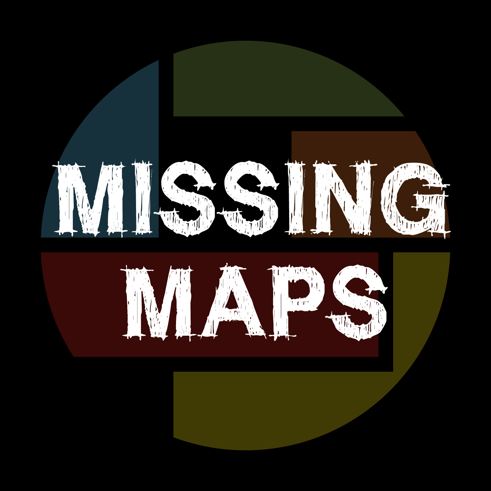
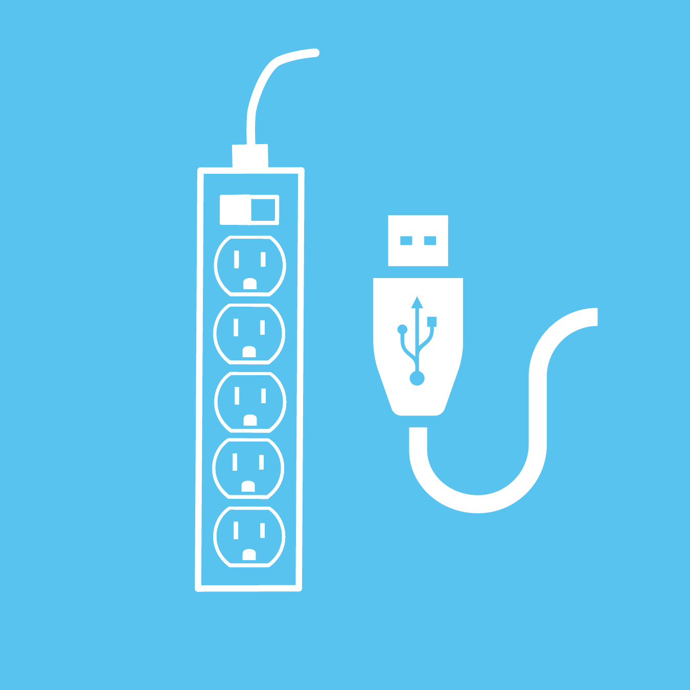
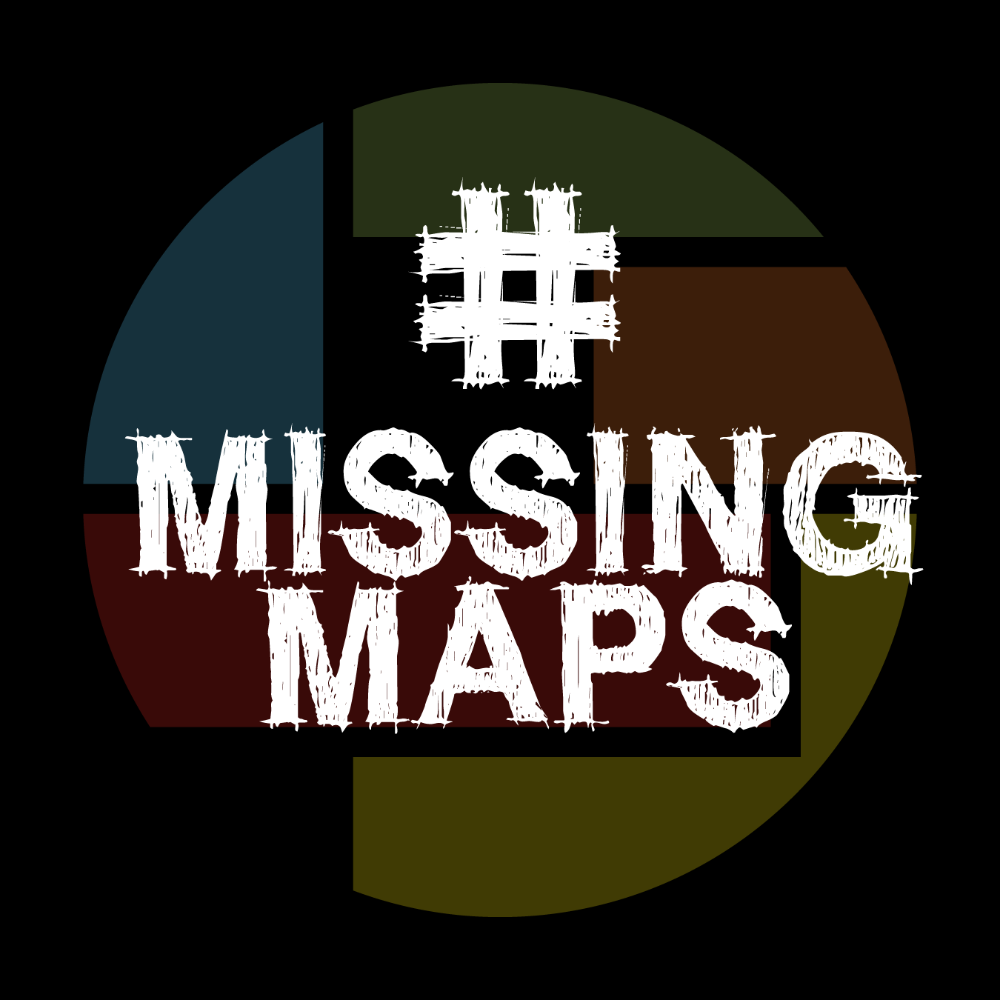

A mapathon is a unique and engaging opportunity for volunteers to digitally connect and map the most vulnerable places in the developing world so that local and international NGOs can use these comprehensive maps and data to better respond to cirses affecting these areas. Digital volunteer engagement is vital for the success of many humanitarian organizations around the world in responding to disasters. It is imperative to have a larger pool of trained volunteers that are ready to assist with little coordination when a disaster occurs.
A mapathon is fun project that requires no special skills or knowledge. Planning typically requires four or more weeks advance notice in order to coordinate and prepare for the engagement opportunity. The following is a list of ingredients for a successful mapathon:
Step 1: Ingredients For A Successful Mapathon
Set a Date and Time
Suggested Time For Event: 2.5 hours
Large Room
Suggested Capacity: 100
Strong Wifi to Allow for Simultaneous Access

Contact Missing Maps for a Suggested List of Mapping Tasks
Tables and Chairs
Projector
Laptop and Mouse

Extension Cords and Computer Cables
Registration Table
Snacks
Recruit Friends and Volunteers to Help with Logistics

Tweet About It! #MissingMaps
Step 2: How We Can Help
We can provide your team with a Missing Maps coordinator that can help coordinate and manage the event. Contact the Missing Maps Coordinator with your date and location so we can help you with the following:
Pick a Mapping Task - Connect with us for a suggested list of the most pressing tasks to map at your event.
Live Presentations - A staff person will be made available either in person or via online streaming to present Missing Maps.
Training Guidance - A staff person will be made available either in person or via online streaming to walk through the training with attendees.
Registration Guidance - We can provide you with tools and tips on how to register and keep track of attendees.
Customized marketing and publicity materials - Sample press releases and intranet posts can be provided by the Missing Maps Coordinator for each engagement event. We can also add your mapathon event info to the Missing Maps Website and the Wiki page.
Collaborate with your local Red Cross/Red Crescent - We can connect you with the local Red Cross/Red Crescent to help find mapping experts and handle translation services when available and appropriate.
Step 3: Event Day Checklist
Set up room.
Set up registration table with name tags, brochures and method to sign people in.
Test equipment to make sure it's all working.
Tape extension cords to the floor for safety.
Place Table Top guides on each table.
Make sure you have contact info for tech or support staff in your event space.


{kind=link}